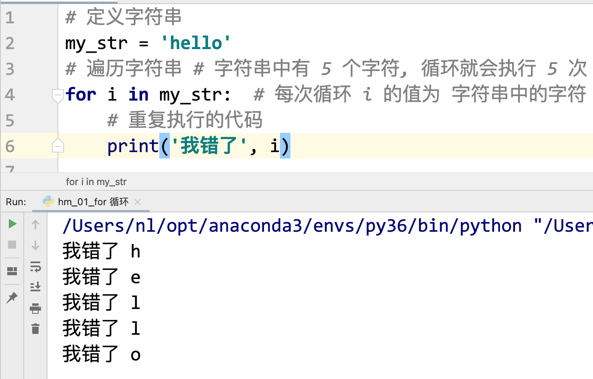
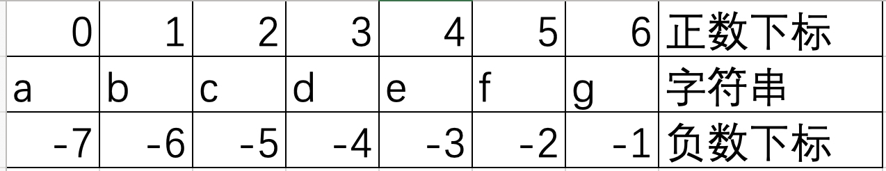

x
% 求余数, 应用就是 判断数学中的整除(余数是 0)12 个位数: 12 % 10 = 2 十位数: 12 // 10 = 1
x
1. 字符串和数字之间不能比大小, 但可以判断是否相等(一定不相等)2. 在 判断中使用 or 的时候, 后边的判断条件一定要写全,不能直写一个数据值数字来说: 0 False, 其余的全是 True, 对于字符串来说, 空字符串'', 是 False, 其余的额全是 True
循环
break 和 continue 字符串的操作
列表介绍
x
for循环也可以让指定的代码重复执行 (循环)for循环可以遍历容器中的数据( 遍历: 从容器中把数据一个一个取出 容器: 可以简单理解为盒子, 盒子中可以存放很多的数据 (字符串 str, 列表 list, 元组 tuple, 字典 dict))for 循环 也可以称为 for 遍历基本的 for 循环语法:
x
for 变量名 in 容器: 重复执行的代码 # 1. for 和 in 都是关键字# 2. 容器中有多少个数据,循环会执行多少次(0 个数据,执行 0 次, ...)# 3. 每次循环,会将容器中数据取出一个保存到 in 关键字前边的变量中
for 做指定次数的循环
x
for 变量 in range(n): 重复执行的代码 # 1, range() 是 Python 中的函数, 作用使用可以生成 [0, n) 之间的整数, 不包含 n 的 , 一个有 n 个数字, 所以这个循环循环 n 次# 2, 想让 for 循环循环多少次,n 就写几# 3, 变量的值 也是每次循环从 [0, n) 取出一个值, 第一次取得是 0 ,最后一次取得是 n-1
range() 变形
x
# 需求: 使用 for 循环获取 5 到 10 之间的数字for 变量 in range(a, b): 重复的代码 # range(a, b) 作用是生成 [a, b) 之间的整数数字, 不包含 b
xxxxxxxxxxfor i in range(5): # [0 1 2 3 4 ] print(i)print('-' * 30)# 需求: 使用 for 循环获取 5 到 10(包含) 之间的数字for m in range(5, 11): print(m)
x
break 和 continue 是 Python 中的两个关键字, 只能在循环中使用break: 终止循环, 即代码执行遇到 break, 循环不再执行,立即结束continue: 跳过本次循环. 即代码执行遇到 continue,本次循环剩下的代码不再执行, 继续下一次循环xxxxxxxxxx# 1. 获取你输入的字符串result = input('请输入一个字符串:')# 2. 遍历打印这个字符串for i in result: # 3. 在遍历的时候,如果这个字符是 e, 不打印(即后续的代码不执行) if i == 'e': continue # 本次循环后续的代码不执行,执行下一次循环 print(i)print('-' * 30)for i in result: # 3. 在遍历的时候,如果这个字符是 e, 不打印(即后续的代码不执行) # 如果这个字符不是 e, 打印 if i != 'e': print(i)
xxxxxxxxxx容器: 也可以称为是数据序列, 或者高级数据类型, 也是 Python 中的数据类型容器中可以存放多个数据.
x
字符串是容器, 因为字符串中可以包含多个字符xxxxxxxxxx定义: 使用引号(单引号, 双引号, 三引号)引起来的内容就是字符串x
# 1. 使用单引号定义my_str1 = 'hello'print(my_str1, type(my_str1))# 2, 使用双引号定义my_str2 = "hello"print(my_str2, type(my_str2))# 3. 使用三引号定义my_str3 = """hello"""print(my_str3, type(my_str3))my_str4 = '''hello'''print(my_str4, type(my_str4))# 4. 字符串本身包含引号 I'm 小明# 4.1 字符串本身包含单引号, 则在定义的时候不能使用单引号# 4.2 字符串本身包含双引号, 则在定义的时候不能使用双引号my_str5 = "I'm 小明"print(my_str5)# 5. 字符串本身包含单引号,在定义的时候,我就是想使用单引号# 5.1 使用 \ 转义字符,将字符串本身的引号进行转义 \' --> ' \" --> "my_str6 = 'I\'m 小明'print(my_str6)# 5.2 字符串 I\'m 小明 \\ --> \my_str7 = 'I\\\'m 小明'print(my_str7)# 5.3 字字符串前边加上 r"" 原生字符串, 字符串中 的\不会作为转义字符, 文件操作会用一下my_str8 = r'I\'m 小明'print(my_str8)my_str9 = r'I\\\'m 小明'print(my_str9)xxxxxxxxxx下标(索引): 就是指字符在字符串中的位置编号, 这个编号就是下标这个编号一般来说都是从左到右进行编号的, 从 0 开始的(Python 中支持负数下标,从右到左进行编号的, 从-1 开始)下标作用: 可以使用下标获取字符串中某个位置的字符语法: 字符串[下标] # 获取指定位置的字符
x
str1 = 'abcdefg'# 1. 打印字符串中最开始位置的字符print(str1[0]) # a# 2. 打印最后一个位置的数据print(str1[-1]) # g# 3. 打印倒数第二个位置的字符print(str1[-2]) # f# 打印下标为 2 的数据print(str1[2]) # c# 获取字符串中字符的个数(获取字符串的长度)# len(字符串) # length(长度)num = len(str1)print(num)# 长度-1 的下标位置是最后一个字符print(str1[num-1]) # g 最后一个字符,倒数第一个print(str1[len(str1)-1]) # g 最后一个字符,倒数第一个
x
切片: 可以获取字符串中多个字符(多个字符的下标是有规律的, 等差数列)语法:字符串[start:end:step]start 是开始位置的下标, end 是结束位置的下标(注意,不能取到这个位置的字符) step 步长,等差数列的差值, 所取的相邻字符下标之间的差值,默认是 1, 可以不写例: [1:5:1] # 1 2 3 4 [1:5:2] # 1 3 [1:5:3] # 1 4[1:5:4] # 1 xxxxxxxxxx# 切片会得到一个字符串, 即可以获取字符串中的多个字符str1 = 'abcdefg'# 1. 获取 abc 字符print(str1[0:3:1]) # abc# 1.1 如果步长是 1 可以不写, 最后一个冒号也不写print(str1[0:3]) # abc# 1.2 如果开始位置为 0 ,可以不写, 但是冒号必须有print(str1[:3]) # abc# 2. 获取 efg 字符print(str1[4:7]) # efgprint(str1[-3:7]) # efg # 2.1 如果最后一个字符也要取, 可以不写, 但是冒号必须有print(str1[4:]) # efg# 2.2 如果开始和结束都不写, 获取全部内容, 但是冒号必须有print(str1[:]) # abcdefg# 3. 获取 aceg # 0 2 4 6, 所以步长为 2print(str1[0:7:2]) # acegprint(str1[::2]) # aceg# 4. 特殊应用, 步长为负数, 开始和结束不写,意思全变, 一般不用管,只有一种使用场景# 反转(逆置) 字符串 字符串[::-1]print(str1[::-1]) # gfedcba
x
字符串.find(sub_str, start, end) 作用: 在字符串中查找是否存在 sub_str 这样的字符串 sub_str: 要查找的小的字符串 start: 开始位置, 从哪个下标位置开始查找, 一般不写,默认是 0 end: 结束位置, 查找到哪个下标结束, 一般不写,默认是 len() 返回(代码执行之后会得到什么, 如果有返回,就可以使用变量保存): 1. 如果在字符串中找到了 sub_str , 返回 sub_str 第一次出现的正数下标(sub_str 中第一个字符在大字符串中的下标) 2. 如果没有找到,返回 -1 xxxxxxxxxxstr1 = "and itcast and itheima and Python"# 在字符串中查找 andnum = str1.find('and')print(num) # 0# 在字符串中查找 第二个 and 出现的下标, 从第一次出现的后一位开始找num1 = str1.find('and', num+1)print(num1) # 11# 在字符串中查找 第三个 and 出现的下标, 从第二次出现的后一位开始找num2 = str1.find('and', num1+1)print(num2) # 23# 在字符串中查找 第四个 and 出现的下标, 从第三次出现的后一位开始找num3 = str1.find('and', num2+1)print(num3) # -1
x
字符串.replace(old_str, new_str, count) # 将字符串中 old_str 替换为 new_str- old_str: 被替换的内容- new_str: 替换为的内容- count: 替换的次数, 一般不写,默认是全部替换- 返回: 替换之后的完整的字符串, 注意: 原来的字符串没有发生改变xxxxxxxxxxstr1 = 'good good study'# 1, 将 str1 中 所有的 g 改为 Gstr2 = str1.replace('g', 'G')print('str1:', str1) # str1: good good studyprint('str2:', str2) # str2: Good Good study# 2. 将 str1 中第一个 good 改为 GOODstr3 = str1.replace('good', 'GOOD', 1)print('str3:', str3) # str3: GOOD good study# 3. 将 str1 中第二个 good 改为 GOOD# 3.1 先将全部的 good --> GOODstr4 = str1.replace('good', "GOOD")# 3.2 再将第一个 GOOD --> goodstr4 = str4.replace('GOOD', 'good', 1)print('str4:', str4) # str4: good GOOD studyx
字符串.split(sep, maxsplit) # 将字符串按照 sep 进行分割(拆分)- sep, 字符串按照什么进行拆分, 默认是空白字符(空格, 换行\n, tab键\t)- max_split, 分割次数,一般不写, 全部分割- 返回: 将一个字符串拆分为多个,存到列表中- 注意: 如果 sep 不写, 想要指定分割次数 则需要按照如下方式使用字符串.split(maxsplit=n) # n 是次数xxxxxxxxxxstr1 = "hello world and itcast and itheima and Python"# 1. 将 str1 按照 and 字符进行拆分result1 = str1.split('and')print(result1) # ['hello world ', ' itcast ', ' itheima ', ' Python']# 2, 将 str1 按照 and 字符进行拆分, 拆分一次result2 = str1.split('and', 1)print(result2) # ['hello world ', ' itcast and itheima and Python']# 3. 按照空白字符进行切割result3 = str1.split()print(result3) # ['hello', 'world', 'and', 'itcast', 'and', 'itheima', 'and', 'Python']# 4. 按照空白字符进行切割, 拆分一次result4 = str1.split(maxsplit=1)print(result4)xxxxxxxxxx字符串.join(列表) # 括号中的内容主要是列表,可以是其他容器# 作用: 将字符串插入到列表中每相邻的两个数据之间, 组成一个新的字符串- 列表中的数据使用使用 逗号隔开的- 注意点: 列表中的数据必须都是字符串, 否则会报错x
list1 = ['good', 'good', 'study']# 1. 将 列表中的字符串使用空格连起来str1 = ' '.join(list1)print(str1) # good good study# 2. 将 列表中的字符串使用 and 连起来str2 = ' and '.join(list1)print(str2) # good and good and study
xxxxxxxxxx列表 list, 是使用最多的一种容器(数据类型)列表中可以存储多个数据, 每个数据之间使用逗号隔开列表中可以存放任意类型的数据x
# 1. 类实例化的方式(不常用)# 1.1 定义空列表(没有任何数据的列表)# 变量 = list()list1 = list()print(type(list1), list1) # <class 'list'> []# 1.2 类型转换 list(容器) 将其他的容器转换为列表# 转换字符串会将字符串中的每个字符作为一个数据存入到列表中list2 = list('hello')print(type(list2), list2) # <class 'list'> ['h', 'e', 'l', 'l', 'o']# 2, 直接使用 [] 进行定义(常用)# 2.1 定义空列表my_list = []print(my_list) # []# 2.2 定义非空列表my_list1 = [1, '小明', 3.14, False]print(my_list1) # [1, '小明', 3.14, False]
xxxxxxxxxx列表支持下标和切片操作, 使用方法和字符串中的使用方法一致区别: 列表的切片得到的是列表xxxxxxxxxxlist1 = ['小明', 18, 1.71, True]# 获取第一个数据,名字print(list1[0])# 获取最后一个数据print(list1[-1])# 第一第二个数据print(list1[0:2]) # ['小明', 18]# 列表页支持 len() 求长度的, 求数据元素个数print(len(list1)) # 4
xxxxxxxxxx在字符串中使用的 find 方法查找下标的,不存在返回的是 -1.在列表中没有 find 方法, 想要查找数据的下标,使用的 index() 方法列表.index(数据, start, end) 使用和 find 方法一样, 同时在字符串中也有 index 方法区别: 返回, index() 方法,找到返回第一次出现的下标, 没有找到代码直接报错xxxxxxxxxx判断容器中某个数据是否存在可以使用 in 关键字数据 in 容器 # 如果存在返回 True ,如果不存在,返回 Falsexxxxxxxxxx统计出现的次数,使用的是 count() 方法列表.count(数据) # 返回 数据出现的次数
xxxxxxxxxxmy_list = [1, 3, 5, 7, 2, 3]# 找 数据 3 出现的下标num = my_list.index(3)print(num) # 1# 找 数据 4 出现的下标# num1 = my_list.index(4) # 代码会报错if 4 in my_list: num1 = my_list.index(4) print(num1)else: print('不存在数据 4')# my_list.count(4) 统计 数据 4 出现的次数if my_list.count(4) > 0: num1 = my_list.index(4) print(num1)else: print('不存在数据 4')
尾部添加(最常用)
x
列表.append(数据) # 将数据添加到列表的尾部返回: 返回的 None(关键字,空), 一般就不再使用 变量 来保存返回的内容想要查看添加后的列表,需要打印的是列表指定下标位置添加
x
列表.insert(下标, 数据) # 在指定的下标位置添加数据, 如果指定的下标位置本来有数据, 原数据会后移返回: 返回的 None(关键字,空), 一般就不再使用 变量 来保存返回的内容想要查看添加后的列表,需要打印的是列表列表合并
xxxxxxxxxx列表1.extend(列表2) # 将列表 2 中的所有数据逐个添加的列表1 的尾部返回: 返回的 None(关键字,空), 一般就不再使用 变量 来保存返回的内容想要查看添加后的列表,需要打印的是列表xxxxxxxxxxmy_list = []print(my_list) # []# 1. 想列表中添加数据 郭德纲my_list.append('郭德纲')print(my_list) # ['郭德纲']# 2. 向列表的尾部添加 郭麒麟my_list.append('郭麒麟')print(my_list) # ['郭德纲', '郭麒麟']# 3. 在下标位置为 1 的位置添加数据 '岳岳my_list.insert(1, '岳岳')print(my_list) # ['郭德纲', '岳岳', '郭麒麟']# 4. 在下标位置为 1 的位置添加数据 于谦my_list.insert(1, '于谦')print(my_list) # ['郭德纲', '于谦', '岳岳', '郭麒麟']# 5. 定义新的列表 list1list1 = ['孙越', '烧饼']# 将 list1 中数据逐个添加到 my_list 中my_list.extend(list1)print(my_list) # ['郭德纲', '于谦', '岳岳', '郭麒麟', '孙越', '烧饼']# 将 list1 作为一个整体添加到 my_listmy_list.append(list1)print(my_list) # ['郭德纲', '于谦', '岳岳', '郭麒麟', '孙越', '烧饼', ['孙越', '烧饼']]